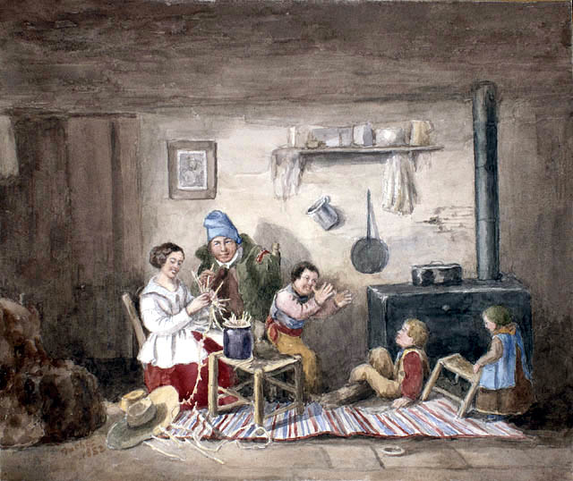
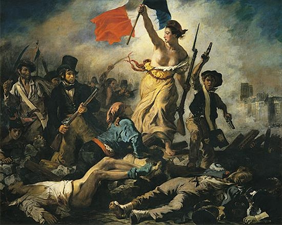

Jacques porte le même prénom que son père, il est la 7ème génération
à vivre au Canada.
Il voit le jour en temps de guerre, celle que l'histoire nomme la
guerre de 1812, entre le Canada et les États-Unis d'Amérique. Au Bas-Canada,
la bataille décisive est celle de Châteauguay, le 26 octobre 1813.
Trois jours plus tard, le 29
octobre 1813, notre ancêtre Jacques naît à Saint-Laurent, Montréal.
Il est le deuxième fils de Jacques Charette et de Marguerite Varin. Ses
parrains sont Louis de Carry et Marguerite Hunault. La guerre se terminera en 1814 mais l'économie du
pays s'en ressent gravement. À noter qu'en Europe aussi il y a la
guerre entre 1812 et 1814, ce sera la fin de l'empereur Napoléon.
En 1832, une épidémie de choléra venue d'Europe,
la même épidémie que Jean Giono décrit dans son livre Le Hussard sur le toit, fait
des milliers de victimes au Canada. À l'été, Place
d'Armes, une fusillade de trois Canadiens tués par l'armée britannique marque bien le
climat de tension politique dans le pays.
 Sainte-Anne-des-Plaines comté Terrebonne, le 16 novembre 1835, Jacques épouse Théotiste
Dubois, fille de Joseph Dubois et de Charlotte
Papineau. Dans l'acte de mariage on mentionne que Jacques est
"cultivateur fils mineur de Jacques Chaurette et Marguerite
Varin de cette paroisse" et que Théotiste est "fille
mineure de Joseph Dubois cultivateur et de Charlotte Papineau de cette
paroisse." Jacques et son beau-père font donc le même métier
de cultivateur. Sainte-Anne-des-Plaines comté Terrebonne, le 16 novembre 1835, Jacques épouse Théotiste
Dubois, fille de Joseph Dubois et de Charlotte
Papineau. Dans l'acte de mariage on mentionne que Jacques est
"cultivateur fils mineur de Jacques Chaurette et Marguerite
Varin de cette paroisse" et que Théotiste est "fille
mineure de Joseph Dubois cultivateur et de Charlotte Papineau de cette
paroisse." Jacques et son beau-père font donc le même métier
de cultivateur.
Évidemment en voyant ce nom de Papineau on peut tout de
suite se demander s'il y a un lien avec "la famille Papineau"
qui a marqué notre histoire.
Et
oui, Charlotte, la belle-mère de Jacques, est apparentée, et nous aussi par le
fait même, à la célèbre famille Papineau.
Charlotte et Louis-Joseph sont de la même génération, ce
sont des cousins au 2ème degré.
|
TABLEAU MONTRANT LA PARENTÉ ENTRE CHARLOTTE PAPINEAU,
BELLE-MÈRE DE JACQUES CHARETTE ET
LOUIS-JOSEPH PAPINEAU
|
Samuel Papineau + Catherine Quevillon
|
Pierre Papineau + M-J. Brignon
|
frères |
Joseph Papineau + M-J. Baudry |
J-Baptiste Papineau + Angélique Ouellet
|
cousins germains |
Joseph Papineau+ M-R. Cherrier |
Charlotte Papineau
|
cousins 2è degré |
Louis-Joseph Papineau
|
Voici la lignée ascendante de Théotiste Dubois

On y retrouve des Filles
du Roy, des soldats du régiment de Carignan,
des héros de Rivière-Ouelle (contre Phipps en 1690) et des gens venus
avec la Grande
Recrue de 1653.
(Pour imprimer, choisir le mode Paysage)
Migration de Jacques et de Théotiste vers les pays-d'en-haut.
 Pour la plupart des gens de cette époque le monde connu finit aux
Laurentides. Ces montagnes forment une barrière infranchissable.
Le
jeune couple s'installe à Saint-Jérôme, comté Terrebonne. Pourquoi
ce choix? Souvent
des membres d'une même famille se suivent, l'un d'entre eux va
s'installer dans un nouvel endroit de colonisation, puis il incite ses
frères et beaux-frères à venir s'y installer aussi. C'est sans doute
ce qui s'est passé car, au moins, deux
frères et une sœur de Jacques se marient à Saint-Jérôme et vivent
dans la région. Plusieurs Charette y habitent encore aujourd'hui.
Le
premier enfant de Jacques et de Théotiste naît en avril 1837. L'automne suivant c'est la rébellion des Patriotes. Plusieurs
autres enfants suivront, dont deux couples de jumeaux.
La famille
déménage à Saint-Sauveur-des- Monts en 1853, où naîtront les deux derniers
enfants du couple.
Jacques est cultivateur et journalier. Ces métiers se retrouvent dans
les actes de baptême des nombreux enfants du couple. Fait à noter,
dans la majorité de ces actes, le curé ajoutait la mention "père
absent". Donc, il semble que Jacques travaillait souvent loin
de son foyer, et ce, peu importe la saison. N'oublions pas qu'à
l'époque l'enfant était baptisé très rapidement après sa naissance,
le même jour si possible.
Migration de Jacques et de Théotiste vers Saint-Henri-des-Tanneries.
Michel, le plus jeune frère de Jacques, épouse une fille de
Saint-Henri-des-Tanneries en novembre 1870. On le retrouve dans
l'annuaire Lovell* de 1870-1871 sur la rue Lemaire, Tannery West, son
métier est laborer.
Est-ce le déclic qui fait déménager la famille de Jacques vers
Saint-Henri au début des années 1870? Jacques va bientôt avoir soixante
ans, la vie dans une ville industrialisée lui apparaît sans doute plus
facile pour vivre ses dernières années. Toujours est-il qu'à partir
de ce moment on retrouve plusieurs Charette, tous
apparentés, frères, oncles, cousins, à Saint-Henri-des-Tanneries.
À partir de l'annuaire Lovell* 1871-1872 nous retrouvons Jacques et
sa famille à Saint-Henri. Son métier est laborer. En 1871 il est
sur la rue Renaud. Dès 1872, il s'installe sur la rue Saint-Antoine. À
noter que dans ces années-là aucun numéro de porte n'est inscrit dans
les annuaires, seulement le nom de la rue.
En 1876 la numérotation des logements débute et Jacques est au 1100
Saint-Antoine.
Son fils Alphonse, marié depuis février 1873, et sa jeune famille
habitent avec eux. C'est d'autant plus compréhensible qu'en 1873 une
crise économique mondiale débute qui va entraîner des faillites, des
fermetures d'usines et du chômage pendant quelques années. En 1878 on retrouve Jacques, carpenter, au 1180
Saint-Antoine. L'année suivante il revient au 1100 Saint-Antoine, Alphonse vit encore
là. En 1880, ce dernier déménage tout près au 1098 Saint-Antoine. Ses
parents continuent à vivre au 1100 Saint-Antoine.
Dans le recensement fédéral de 1881* nous trouvons le ménage de
Jacques comprenant:
- Jacques Charrette 67 ans journalier
- Théotiste Charrette 62
ans
- Hileire Charrette 20 ans fabricant de drapes
- Eliza Charrette 16 ans apprentie contourier
- Joseph Charrette 18 ans journalier
À noter qu'il y a
souvent des erreurs dans les données et les dates inscrites
dans un recensement parce que le recenseur inscrit les noms à sa façon, et que les recensés, souvent
analphabètes, ne peuvent pas l'aider.
De plus, dans le cas du recensement de 1881, la
retranscription des données, faite par les Mormons,
est source de plusieurs erreurs
suite à leur non compréhension du français.
Conclusion: en combinant d'autres sources, on peut affirmer qu'en 1881 Jacques vit à
Saint-Henri avec sa femme
et ses trois plus jeunes enfants, Hélène née en 1861, Alice née en
1865 et Joseph né en 1863. Les deux jeunes filles travaillent en usine,
l'une fabrique des draps, l'autre est apprentie couturière. Les usines,
ce n'est pas ce qui manque à Saint-Henri dans cette deuxième moitié du
19ème siècle.
En 1882 Jacques déménage au 1102 Saint-Antoine, puis en 1887 il revient au 1100
Saint-Antoine.
Son nom apparaît dans les annuaires Lovell* jusqu'en 1892. À noter qu'un métier
est toujours inscrit près de son nom (laborer ou carpenter).
Il ne prend pas de retraite. Faut se rappeler qu'aucune
sécurité sociale ou pension de vieillesse n'existe encore.
Théotiste décède à Saint-Henri le
21 mai 1890 et Jacques, le 17 décembre 1897. Il a 84 ans.
* Les
annuaires Lovell couvrent du 1er juillet d'une année au 30 juin de
l'autre. Les données sont récoltées de porte en porte en mai. Dans
certains annuaires les propriétaires sont identifiés par un astérisque.
Le métier est souvent inscrit, ainsi que l'employeur. On peut faire des
recherches par le nom de la personne, ou par l'adresse. Ils sont
disponibles sur le site des Archives
Nationales.
* Le
recensement fédéral de 1881 se retrouve sur le site
de généalogie des Mormons.

JACQUES ET THÉOTISTE DURANT LES RÉBELLIONS
DES PATRIOTES
Lors des rébellions de 1837-1838, Jacques et Théotiste sont un jeune couple
de Saint-Jérôme avec un jeune enfant. Nous ne connaissons pas leurs
pensées et leurs agissements, mais on ne peut douter que ces
graves évènements n'aient eu un grand impact dans leur vie. Prennent-ils
parti pour les rebelles ou pour les miliciens loyaux?
Une partie significative d'un peuple, réputé isolé, arriéré et
illettré, est alors traversée,
plus ou moins consciemment, par un
courant de pensée qui se situe
à l'avant-garde de l'Occident.
La rébellion des Patriotes s'inscrit dans son époque, celle du Romantisme
qui explose dans tous les arts et qui se répercute dans toute la
société, bouleversant la vie de chacun. Ce mouvement intellectuel et culturel, souvent faussement taxé de
sentimentalisme, prend ses origines dans la révolution française. Pour comprendre
le véritable sens que lui avaient donné les poètes, les peintres et
les penseurs de la fin du 18ème et du 19ème siècle, il faut se
référer aux profonds bouleversements que provoquèrent les Lumières
dans les mentalités de l'époque. La raison dominait le Siècle des
lumières: le monde y était l'œuvre d'un esprit supérieur, Dieu,
tandis que l'univers s'y trouvait régi par des lois destinées au
bien-être de l'humanité. Cependant ceux qui se percevaient comme
Romantiques avaient une vision du monde toute personnelle: les artistes
ne pouvaient rester indifférents aux évènements et aux grandes
mutations de leur époque. De fait, le progrès matériel suscité par
le Siècle des lumières devait s'assortir d'une émancipation politique
et spirituelle. Les Romantiques étaient galvanisés par les premières
victoires de la Révolution française. Pour eux, qui croyaient au
soulèvement populaire, la vie prenait alors une tournure pleine de
promesses et d'espoirs.
|

La liberté guidant le peuple, Eugène Delacroix, 1830 |
Plusieurs révolutions secouent le monde occidental à cette époque:
- La révolution américaine qui mène à la Déclaration
d'indépendance de 1776.
- La révolution française qui débute en 1789 et qui devient une
véritable saga durant de nombreuses années.
- La guerre d'Espagne en 1808 à 1814. C'est une guerre napoléonienne,
mais les Espagnols l'appellent la "guerre d'indépendance"
et la considèrent comme un épisode fondateur de leur histoire.
- La guerre d'indépendance de la Grèce en 1822.
- Simon Bolivar mène la révolution en Amérique latine. Il est un
général et homme politique sud-américain, patriote, chef des
guerres d'indépendance des colonies espagnoles d'Amérique du Sud de
1813 à sa mort en 1830.
- Les Décembristes russes, un mouvement insurrectionnel
demandant l'abolition du servage est réprimé dans une émeute
sanglante en 1825.
- Paris connaît des journées révolutionnaires en 1830.
- Giuseppe Mazzini fonde le mouvement Jeune-Italie en 1831.
- En 1848 une flambée révolutionnaire se propage à travers toute
l'Europe. En Allemagne, cela permet de jeter les bases d'une
nouvelle Constitution. La classe moyenne naissante peut ainsi
exprimer sa volonté d'être dirigée par un gouvernement libéral.
- En 1849, une autre insurrection en Russie, plusieurs insurgés
sont envoyés au bagne, dont Dostoïevski. Il témoigne de sa vie d'insurgé
et de bagnard dans son oeuvre
littéraire.
 La cause de la liberté La cause de la liberté
Des
organisations secrètes se multiplient dans le monde: Charbonnerie,
Tugendbund, les Fils de la liberté, ... L'agitation sociale porte
un vent de liberté dans plusieurs pays. Écrivains,
philosophes, économistes, scientifiques, plusieurs prônent le progrès,
un idéal de partage égal des biens. Le Manifeste communiste est
publié par Marx et Engels en 1848.
Donc les rébellions de 1837-1838
dans le Bas et le Haut-Canada s'inscrivent dans cette esprit de
recherche de liberté et d'égalité entre les individus et les peuples.
Un penseur social anglais de l'envergure de John Stuart Mill sympathise
avec les Patriotes. Ces derniers défendent des idées aussi avancées
que celles du mouvement ouvrier londonien. Le principe des
nationalités, défendu par les Patriotes, est l'expression d'une
nouvelle philosophie libérale, démocratique et anti-impérialiste qui
déferle sur l'Europe et non pas la préfiguration du
"nationalisme" canadien-français, doctrine de droite hégémonique,
mise plus tard en avant pour réagir précisément contre cette
philosophie progressiste.
Ce soulèvement a entraîné l'union des deux Canadas en 1840 et l'avènement
du gouvernement responsable en 1848. Ailleurs dans le monde les choses
changent aussi, sous la poussée de ces gens qui luttent pour faire
avancer leurs causes. Quelques exemples, l'inquisition espagnole est
abolie en 1834, l'Italie est unifiée en 1861, les serfs de Russie sont
affranchis en 1861, l'esclavage est aboli aux États-Unis en 1865.
Combat par combat, la société évolue, en y mettant le temps.

|